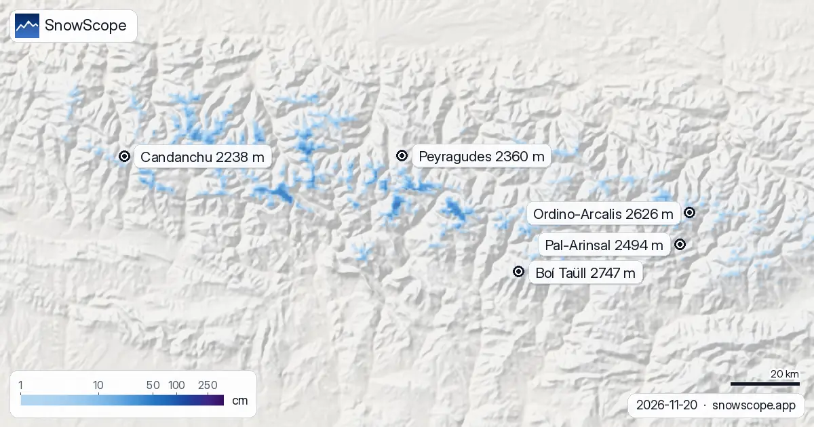
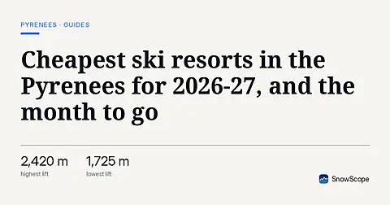

Pyrenees snow line above most resorts this weekend
The freezing level stays well above the base of most Pyrenees resorts through Saturday, with rain falling on the existing snowpack at lower elevations. Only from Sunday onwards will it drop enough for most of the range to see consistent snow.
See the live snow forecast for Boí Taüll in the SnowScope appSnow depth, powder alerts and the 3D map, free.
Where the boundary between rain and snow sits
The 0 °C level (the height where air temperature crosses freezing) ranges from 2,140 m on Friday to 1,740 m on Saturday across the Pyrenees. At the warmest part of each day, the actual snow line sits roughly 300 m below that—so around 1,840 m on Friday and 1,440 m on Saturday. This means rain is falling on the existing snowpack at resorts below those heights.
Candanchu faces the clearest risk: snow on the slopes and rain falling on it both Friday and Saturday. At Boí Taüll, the snow line climbs above the resort top (2,747 m) on Friday alone. Ordino-Arcalis, Pal-Arinsal and Peyragudes remain above the snow line through the whole forecast period, so any new precipitation arrives as rain across all elevations.
| Resort | Snow depth | New snow, 72 h | Coming, next days | Top |
|---|---|---|---|---|
| Boí Taüll | 2 cm | 6 cm | 14 cm | 2,747 m |
| Ordino-Arcalis | 4 cm | 7 cm | 9 cm | 2,626 m |
| Pal-Arinsal | 2 cm | 4 cm | 8 cm | 2,494 m |
| Peyragudes | 0 cm | 2 cm | 9 cm | 2,360 m |
| Candanchu | 7 cm | 7 cm | 20 cm | 2,238 m |

What happens after Saturday
Sunday brings a sharp shift. The freezing level drops to 1,640 m in the northern sections, with the snow line settling around 1,340 m. By then, 32 of the 53 resorts in the range should see snow cover, up from 25 today. Snow coverage across the region is forecast to nearly double, from 1,090 km² to 2,510 km² by Sunday evening.
The pattern then steadies: Monday sees the freezing level rise again to 2,650 m, but by then the high-altitude resorts will have accumulated fresh snow from the preceding days.

What the numbers mean for your run
Candanchu leads the forecast with 20 cm of new snow expected over the next few days, partly because it sits low enough to catch snow on Sunday and Monday. Boí Taüll and Ordino-Arcalis will each gain around 14 and 9 cm respectively. All three are still shallow—Candanchu today has only 7 cm on the upper slopes—so thin coverage and exposed rock remain hazards.
The satellite model shows a clear divide this weekend: high peaks gain altitude-appropriate snow, whilst mid-mountain slopes endure rain-on-snow conditions that will bond layers and add weight to the existing base. By Sunday, the entire range tips into dry snow accumulation mode.
Tips for skiers
- Friday and Saturday: stay above 2,500 m if you want dry snow; rain-on-snow at lower elevations will soften surface conditions and increase slope stability risk.
- Candanchu faces rain on snow both Friday and Saturday; check the official avalanche bulletin before skiing off-piste.
- Sunday onwards: snow line drops to around 1,340 m; the full range becomes skiable in snow for the first time in days.
- Expect rapid overnight refreezing at high elevations from Sunday, creating firm crust early mornings that softens through the day.
- Total accumulation over the forecast period peaks at Candanchu (20 cm) and Baqueira-Beret (14 cm); these will offer the best riding once the transition finishes.
About these numbers
Resort snow depths are the deepest snow on the resort's upper slopes from the SnowScope snow model (about 1 km, run of 20 November); they are estimates for an area, not a measurement at one point. Station values are measurements on the date shown. Forecasts can change. Always read the official avalanche bulletin before going off-piste.
Official avalanche bulletins: Météo-France / Meteocat / AEMET
Cite this report
For research, teaching or the press: the numbers and charts are free to reuse under CC BY 4.0 with this citation.
SnowScope (2026), Pyrenees snow line above most resorts this weekend, https://snowscope.app/blog/en/2026/11/pyrenees-freezing-level-snow-line-20-november-2026.html, accessed 2026-11-20
SnowScope (Atlas Labs). (2026, November 20). Pyrenees snow line above most resorts this weekend. SnowScope snow reports. https://snowscope.app/blog/en/2026/11/pyrenees-freezing-level-snow-line-20-november-2026.html
BibTeX
@misc{snowscope2026pyreneesfreezinglevelsno,
author = {{SnowScope (Atlas Labs)}},
title = {Pyrenees snow line above most resorts this weekend},
year = {2026},
month = nov,
howpublished = {\url{https://snowscope.app/blog/en/2026/11/pyrenees-freezing-level-snow-line-20-november-2026.html}},
note = {Published 2026-11-21 12:44 UTC; accessed 2026-11-20}
}· CC BY 4.0 · Methods, data and tools →
Boí Taüll: snow and temperature by height, this winter vs last (tools) →
Follow Boí Taüll
Free: a message when fresh snow is coming, and the forecast every morning.
More snow reports

Freezing level reaches 3400m–3600m over the next three days, bringing rain to the snowpack from 09–11 November. Forecast from 08 November.

Grandvalira is often sold as cheap December skiing, yet natural snow at the base averages just 9 cm in past winters.

Pyrenees day passes from 46 EUR: six resorts in France, Spain and Andorra compared by price, then by the snow they usually have in December and January.